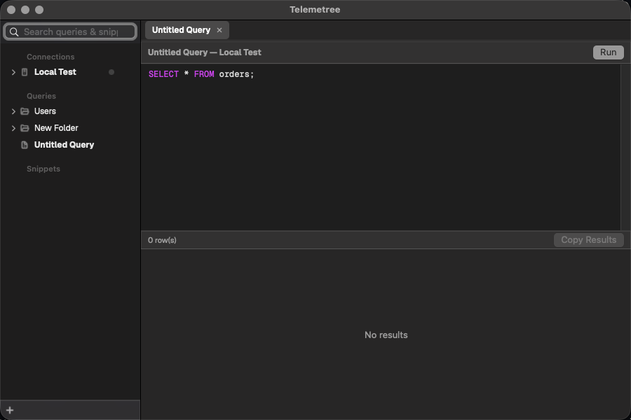
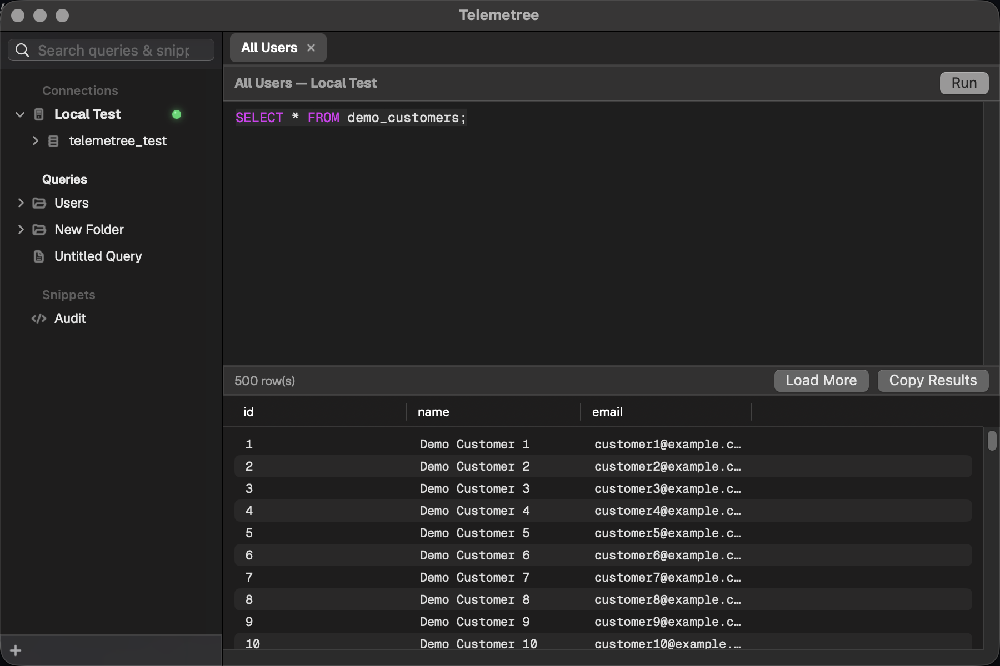
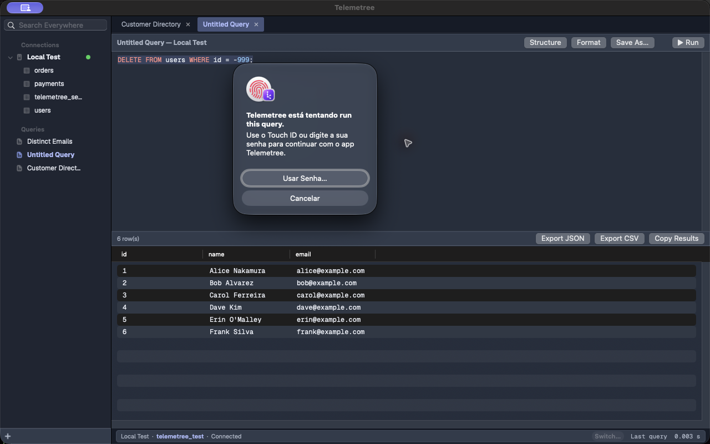

Telemetree is a fast, keyboard-first native macOS SQL client for MySQL, PostgreSQL and SQLite — Swift and AppKit, not Electron. Built around persistent query documents and schema-aware SQL assistance, instead of the disposable tabs most SQL clients give you.

Features
No vaporware — this is what runs today, from the app's own milestone spec.
Named queries organized in folders in the sidebar, autosaved as you type — the way a code editor treats files, not the way a SQL client treats tabs.
Keyword-level SQL highlighting plus a custom completion popup — keywords, real table names after FROM/JOIN/etc., and real column names (scoped to the tables the current statement references) everywhere else, all correct case. Only Tab ever accepts a suggestion.
⌘⇧P jumps straight to any query, connection, or action — arrow keys and return, no mouse required.
Every executed query is logged — connection, timestamp, success or failure — searchable, capped at 500 entries, double-click to reopen.
DELETE, DROP, TRUNCATE, and every UPDATE — WHERE clause or not — require Touch ID before they run.
Light or dark interface, GitHub Light or Dark SQL colors, and editor font/size — applied live to open documents.
A plain, un-LIMITed SELECT pages in 100 rows at a time with numbered page navigation ("1-100 of 10,000"), instead of pulling an entire result set into memory.
Passwords never touch disk in plaintext. No account, no cloud, nothing phones home — just this app and your database.
Double-click a cell in an editable result set (a real primary key required) to edit it in place — Touch ID confirms the exact old → new value before the UPDATE runs.
Every active connection on a MySQL or PostgreSQL server — process list or pg_stat_activity — auto-refreshing every 2.5 seconds, right from the sidebar.
Option-click a foreign key cell in the results grid to jump straight to the referenced row in the other table — real schema introspection, not a guess from column naming conventions.
Compared
Not a feature-count contest — DataGrip and DBeaver support far more engines and tooling. This is what's different, not a claim of "better."
| Telemetree | TablePlus | DataGrip | DBeaver | |
|---|---|---|---|---|
| Native, not Electron/Java | ✓ | ✓ | ✗ | ✗ |
| Free & open source | ✓ | ✗ | ✗ | ✓ CE |
| Persistent query docs, not disposable tabs | ✓ | ✗ | ✗ | ✗ |
| Touch ID before DELETE/DROP/TRUNCATE/UPDATE | ✓ | ✗ | ✗ | ✗ |
| MySQL, PostgreSQL & SQLite | ✓ | ✓ | ✓ | ✓ |
In practice
Persistent queries, readable results, and a clear view of the active database context.


Appearance
A restrained native workspace with clear hierarchy, neutral surfaces, and familiar GitHub Light and Dark syntax colors. The bottom status bar keeps connection, database, and query timing in view.
Light and Dark appearances use macOS-native controls, neutral surfaces, and a restrained blue accent.
GitHub Light and GitHub Dark syntax palettes are selectable independently in Preferences.
Choose Light or Dark appearance and GitHub Light or Dark SQL colors in Preferences.
Where it stands
This is a personal project, built and used against real MySQL, PostgreSQL, and SQLite databases. Releases are ad-hoc signed, not notarized — Gatekeeper will still flag the first launch.
USE, so that's handled honestly instead of papered over)FROM/JOIN; real column names scoped to the statement's tables once a FROM exists; and, before one exists, qualified table.column suggestions across every known table — accepting one inserts the column and appends the matching FROM clause for you, cursor left exactly where you were typing. Tab-only accept.USE, so unqualified table names resolve without db.table qualificationbrew install --cask telemetree, or a zip on GitHub Releases (ad-hoc signed, not notarized)